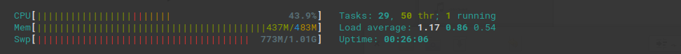

The method on Windows OS is easy. Why do you use linuxOS? Yes, the installation is easier. But Windos OS need a more resoures such as cpu, memery, which means you need to pay more money on your server.
I use Debain 8+. It’s a good choice if you want to use the newest software packages. So I recommand you to use Debain in order to save you some time. I hope it can give you some help when you build an unturned server. If you choose the easy way to install, it take about 10 mintues to finish your installation. Good luck!
update 2019.11.30 Rocket change into github address
Someone says he saw the warning: WARNING: The runtime version supported by this application is unavailable. Using default runtime: v4.0.30319It’s not an error.
Stopped without errors If you server is stopped, possibly it’s because the cpu of your server is limited. Your Unturned server cpu uses too high. You can try to add some swap into your server to solve it. You can read how to add swap. Here is mine. After incrasing swap, the usage of cpu less than 50% for Washington map. 
Installation
Method 1
As root
touch a.sh && chmod +x a.sh copy the beblow codes and paste. replace server_dir, username, steamid, steam_psd with your settings.
echo Now the user is $USER apt update apt install sudo -y apt install wget -y apt install screen htop unzip -y #Utils apt install lib32stdc++6 -y #SteamCMD dependencies apt install mono-runtime libmono-cil-dev -y apt install libc6 libgl1-mesa-glx libxcursor1 libxrandr2 -y # prerequisites for Unity 3D apt install libc6-dev libgcc-8-dev -y # prequesites for BattlEye
adduser $username usermod -aG sudo $username
sudo -u $username -H sh -c "mkdir -p /home/$username/$server_dir cd /home/$username/$server_dir mkdir steamcmd cd steamcmd wget --no-check-certificate https://steamcdn-a.akamaihd.net/client/installer/steamcmd_linux.tar.gz tar xvf steamcmd_linux.tar.gz rm -rf steamcmd_linux.tar.gz chmod +x steamcmd.sh cd /home/$username/$server_dir wget --no-check-certificate https://github.com/RocketMod/Rocket.Unturned/releases/download/4.9.3.0/Rocket.Unturned.zip cp Rocket.Unturned.zip Rocket.zip unzip Rocket.zip rm -rf Rocket.zip Rocket.Unturned.zip mv Scripts/Linux/* . chmod +x update.sh chmod +x start.sh ./update.sh $steamid $steam_psd echo 'cccccccccccccccccccccccccccccccccccccccccccccccccccccc' cd /home/$username/$server_dir rm -rf lib mkdir lib cp steamclient.so /home/$username/$server_dir/lib echo 'pppppppppppppppppppppppppppppppppppppppppppppppppppppp' " echo $USER echo Congraulations! Now You need su username and cd server_dir, run ./start.sh
As user
We should try a start to generate some configs.
cd ~/unturnedserver sudo screen ./start.sh
Press ctrl + c end the server. let’s configure the map and other things.Here my map is France. The mode is pvp. You can change some things as you want. Write configurations into the file ~/unturnedserver/Servers/Rocket/Server/Commands.dat
echo 'decay 2404800 log Y/Y/Y/Y map France maxplayers 10 mode Hard name France|basic kits perspective First port 27015 sync Y timeout 400 pvp Y welcome Welcome to my telegram group:....' > ~/unturnedserver/Servers/Rocket/Server/Commands.dat
Then restart it and run it background.
cd ~/unturnedserver sudo screen ./start.sh #press ctrl + a + d
Enjoy it!
Method 2 Traditional Way
Firstly, install some nessary dependencies.
#### As root apt install screen htop unzip #Utils apt install lib32stdc++6 #SteamCMD dependencies apt install mono-runtime libmono-cil-dev apt install libc6 libgl1-mesa-glx libxcursor1 libxrandr2 # prerequisites for Unity 3D apt install libc6-dev libgcc-8-dev # prequesites for BattlEye
Secondly, add a user.
adduser unt usermod -aG sudo unt
Thirdly, install steamcmd and unturned.
su unt
#### As unt cd ~ mkdir ~/unturnedserver && cd ~/unturnedserver mkdir steamcmd && cd steamcmd wget https://steamcdn-a.akamaihd.net/client/installer/steamcmd_linux.tar.gz tar xvf steamcmd_linux.tar.gz && rm -rf steamcmd_linux.tar.gz
Fourthly, get a new steam account and do the below.
./update.sh steamID steamPasswd ./start.sh
** If it happened with error: ** steamclient.so: wrong ELF class: ELFCLASS32 [S_API FAIL] SteamAPI_Init(): Sys_LoadModule failed to load: steamclient.so
The next step, configure the server. Here is an example by editing ~/unturnedserver/Servers/Rocket/Server/Commands.dat
decay 2404800 log Y/Y/Y/Y map France maxplayers 15 mode Hard name Awesome France| VANILLA perspective First port 27015 sync Y timeout 500 pvp Y welcome Welcome to my telegram group:....
Run it background.
cd ~/unturnedserver sudo screen ./start.sh #press ctrl + a + d
Done! Now you can open your steam and try to connect it.
Update
cd into your directory and run ./update.sh.Here is mine.
cd unturnedserver && ./update.sh
Add icon
At last, let’s add an icon for the server. Put this image adress into Config.json After that, don’t forget to restart.